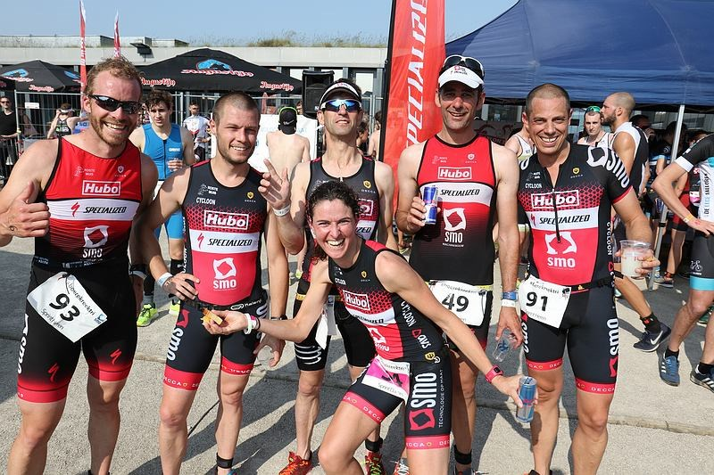
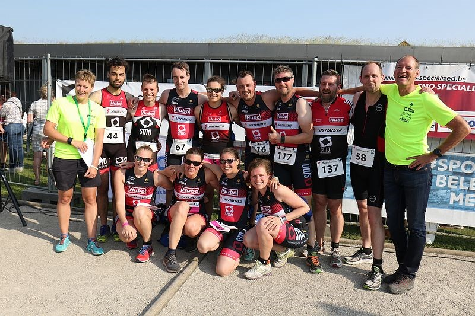

Op Pinksterzondag was het provinciaal centrum De Boerekreek het decor voor het Meetjeslandse Triatlon Festival voor jong en oud. Ruim 450 deelnemers en meer dan 2000 bezoekers zakten af naar een zonovergoten St-Laureins voor een sportief dagje, van just for fun tot topsport van de bovenste plank.


De allerkleinsten staken van wal met hun ironkids triathlon, just for fun en zonder officiële uitslag. Door de frisse watertemperaturen werd beslist om de Ironkids A en B niet te laten zwemmen, deze reeks werd omgevormd naar een powerkid duatlon met 600m lopen 5 km fietsen onder begeleiding en 1,2 km lopen. De Meetjeslandse jeugd genoot duidelijk met volle teugen van hun gloriemoment onder de aankomstboog. Aansluitend kwamen de jeugd C, B en just for fun reeksen in actie voor hun wedstrijd. Er werd een mooie strijd gestreden.
In Sint-Laureins kregen de triatleten voor de tweede manche van de T3 Series een supersprinttriatlon voorgeschoteld. Deze nieuwe formule zorgde voor spektakel in St-Laureins. Jelle Geens bleek daarin duidelijk de sterkste, al kwam de Brit Christopher Pelham nog sterk opzetten. Bij de vrouwen kregen we een spannende strijd tussen Jolien Vermeylen en de Tribe-atlete Kiara Lenaertz en Hanne Peeters. Jolien pakte uiteindelijk de overwinning na van start tot finish aan de leiding te gaan. Jelle Geens zit duidelijk in een bloedvorm. De topsporter haalde het na een sterke loopproef voor de Brit Cristopher Pelrham van TRIGT. Belgisch kampioen olympische triatlon Arthur De Jaegher (Leuven) pakte de derde plaats voor de Fransman Dylan Magnien. De ploegzege was overduidelijk voor Trigt (Doornik) deze keer voor Atriac. SMO-Specialized strandde op een 5e plaats in het totaalklassement.
Bij de sprinttriatlon ging de dagzege naar Job Teblick (Atriac) en Karlien Claus (SMO-Specialized). Ook een 10-tal Meetjeslandse trio’s maakten voor het eerst kennis met de triatlonsport. De starters van het “Start to triatlon” project bereikten allen met de glimlach de finishlijn. Een leuke onderlinge strijd zorgde voor gezonde "concurrentie" tijdens D-day. Deze kennismaking smaakte bij iedereen duidelijk naar meer… op naar de volgende uitdaging.
Bedankt aan alle sponsors, vrijwilligers, atleten en supporters om jullie steentje bij te dragen aan het welslagen van deze editie. Op onze facebook-pagina zijn heel wat mooie foto’s terug te vinden van een geslaagde editie van de Boerekreektriatlon 2018. Hopelijk zijn jullie terug van de partij.
Volgende editie: zaterdag 1 juni 2018 #savethedate